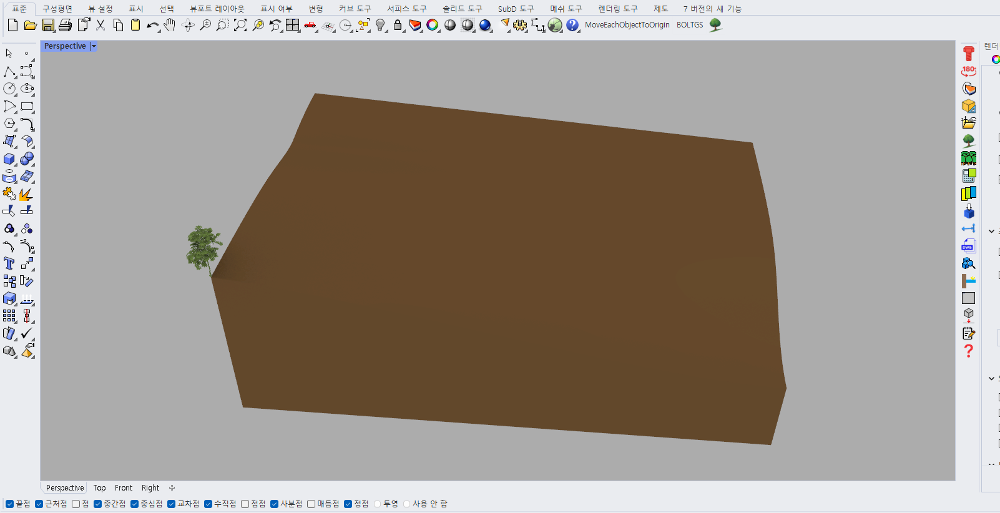
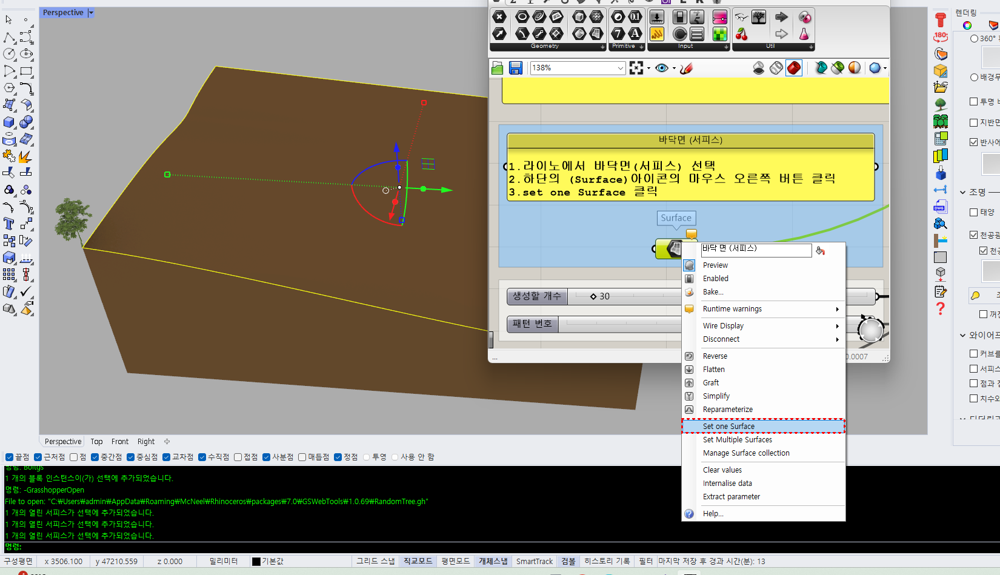
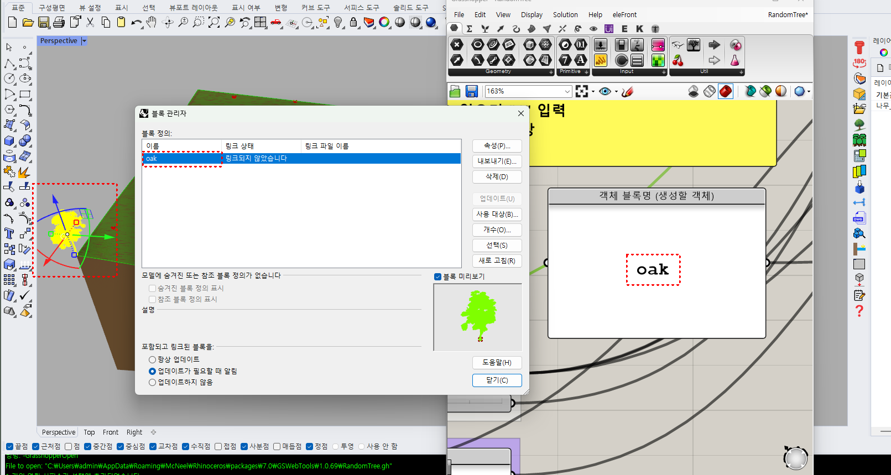
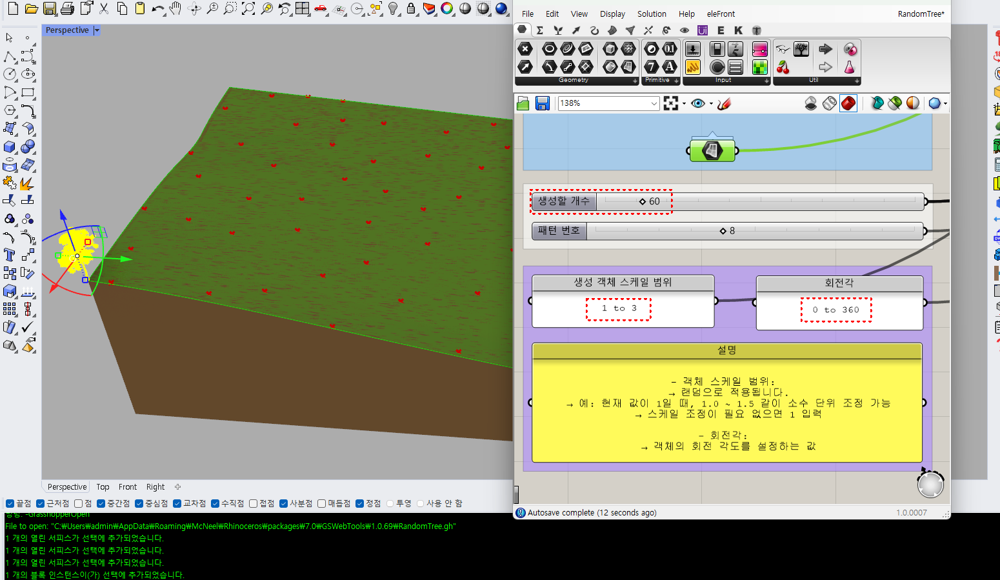
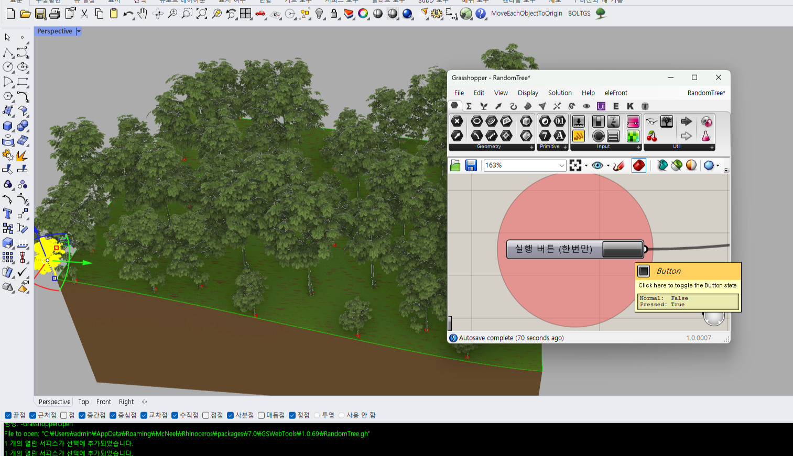

나무 및 객체 랜덤배치 (그래스호퍼)
UnfoldArrange :
나무 및 객체 랜덤배치 (그래스호퍼)
Steps
랜덤 배치할 객체와 바닥면(서피스) 준비
나무 및 객체 랜덤배치 아이콘 실행
바닥면 선택 후 그래스호퍼 서피스 아이콘 우클릭 ''set one Surface'' 적용
배치할 객체를 블록으로 지정하고 그래스호퍼 블록명 입력창에도 입력한다.
생성할 개수를 선택하고 패턴 번호(랜덤) 적용한다.
생성 객체 스케일 범위는 현재 스케일은 1이고 조정이 필요없을 경우는 ''1 to 1'' 입력한다.
라이노에서 실시간 패턴 및 배치 될 부분을 확인하고 실행 버튼을 누른다.
배치 완료하면 그래스호퍼 종료
    
Note
랜덤 배치 한 후 바닥면이 굴곡이 질 경우에는 ''선택한 객체의 바닥을 지정한 표면에 이동'' 명령어로 자연스럽게 재배치 가능
기존 객체는 그대로 유지됩니다.
기존 객체의 바닥면을 기준으로 배치가 됩니다.